24 Count Response
24.1 Hair and eye color data
Let’s take a look at the data.
HairEyeColor %>%
tidyr::spread(Eye, Count)| Hair | Blue | Brown | Green | Hazel |
|---|---|---|---|---|
| Black | 20 | 68 | 5 | 15 |
| Blond | 94 | 7 | 16 | 10 |
| Brown | 84 | 119 | 29 | 54 |
| Red | 17 | 26 | 14 | 14 |
gf_tile(Count ~ Hair + Eye, data = HairEyeColor) %>%
gf_text(Eye ~ Hair, label = ~Count, color = "white", size = 10) %>%
gf_refine(scale_fill_viridis_c(option = "C", begin = 0.1, end = 0.9))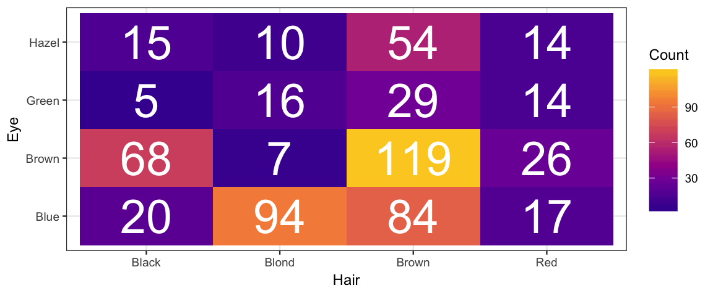
gf_col(Count ~ Hair, fill = ~ Eye, data = HairEyeColor, position = "dodge") %>%
gf_refine(scale_fill_manual(values = c("blue", "brown", "forestgreen", "tan")))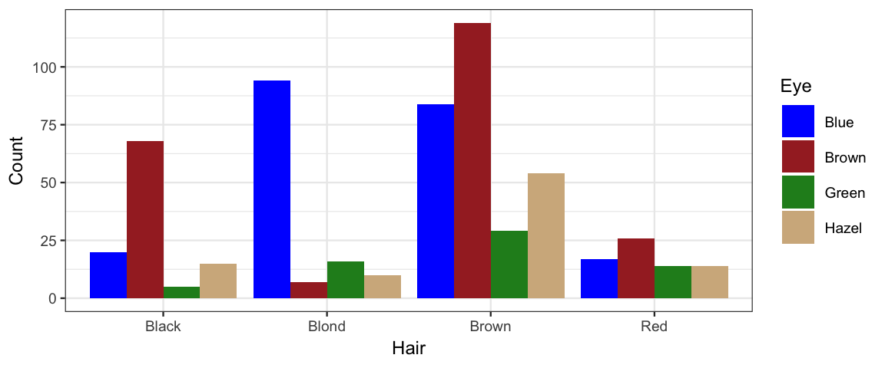
gf_col(Count ~ Eye, fill = ~ Hair, data = HairEyeColor, position = "dodge") %>%
gf_refine(scale_fill_manual(values = c("black", "wheat1", "brown", "red")))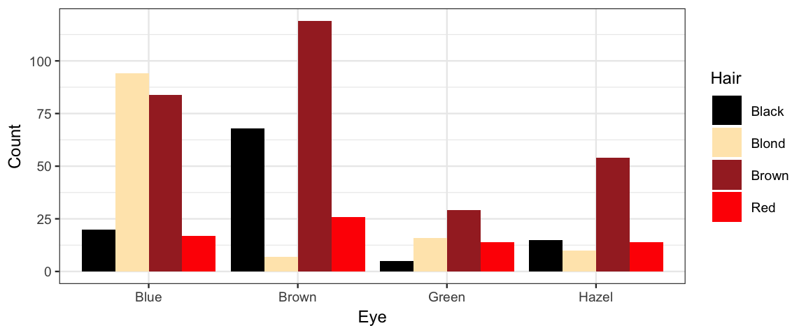
24.2 Are hair and eye color independent?
You probably suspect not. We expect blue eyes to be more common among blond-haired people than among black-haired people, perhaps. How do we fit a model to test if our intuition is correct using the data above?
If the rows and columns of the table were independent, then for each row \(r\) and column \(c\) the probability of being in a row \(r\) and column \(c\) would be the product of the probabilities of being in row \(r\) and of being in column \(c\):
\[ \begin{align*} \frac{\mu_{r c}}{N} &= \frac{y_{r\cdot}}{N} \cdot \frac{y_{\cdot c}}{N} \\ \mu_{r c} &= \frac{1}{N} \cdot y_{r\cdot} \cdot y_{\cdot c} \\ \log(\mu_{r c}) &= \underbrace{\log(\frac{1}{N})}_{\alpha_0}\cdot1 + \underbrace{\log(y_{r\cdot})}_{\alpha_{r \cdot}}\cdot1 + \underbrace{\log(y_{\cdot c})}_{\alpha_{\cdot c}}\cdot1 \\ \log(\mu) &= \alpha_0 + \sum_{r = 1}^R \alpha_{r\cdot} [\![ \mathrm{in\ row\ } r ]\!] + \sum_{c = 1}^C \alpha_{\cdot c} [\![ \mathrm{in\ column\ } c ]\!] \\ \log(\mu) &= \underbrace{(\alpha_0 + \alpha_{1\cdot} + \alpha_{\cdot 1})}_{\beta_0} + \sum_{r = 2}^R \alpha_{r\cdot} [\![ \mathrm{in\ row\ } r ]\!] + \sum_{c=2}^C \alpha_{\cdot c} [\![ \mathrm{in\ column\ } c ]\!] \\ \log(\mu) &= \beta_0 + \sum_{r = 2}^R \beta_{r\cdot} [\![ \mathrm{in\ row\ } r ]\!] + \sum_{c=2}^C \beta_{\cdot c} [\![ \mathrm{in\ column\ } c ]\!] \end{align*} \]
This looks exactly like our additive linear model (on the log scale) and so the common name for this model is the log linear model.
If the rows and columns are not independent, then we will have non-zero interaction terms indicating how far things are from independent. We know how to add in interaction terms, so we are good to go there.
All that remains is to come up with a good distribution that turns a mean \(\mu\) into a count. We don’t expect the cell count $y_{rc} to be exactly \(\mu_{rc}\) (especially when \(\mu_{rc}\) in not an integer!). But values close to \(\mu_{rc}\) should be more likely than values farther away from \(\mu_{rc}\). A Poisson distribution has exactly these properties and makes a good model for the noise in this situation.
Poisson distributions have one parameter (often denoted \(\lambda\)) satisfying
\[ \begin{align*} \mathrm{mean} &= \lambda \\ \mathrm{variance} &= \lambda \\ \mathrm{standard\ deviation} &= \sqrt{\lambda} \\ \end{align*} \]
Here are several examples of Poisson distributions. Notice that \(\lambda\) need not be an integer, but all of the values produced by a Poisson random process are integers.
gf_dist("pois", lambda = 1.8)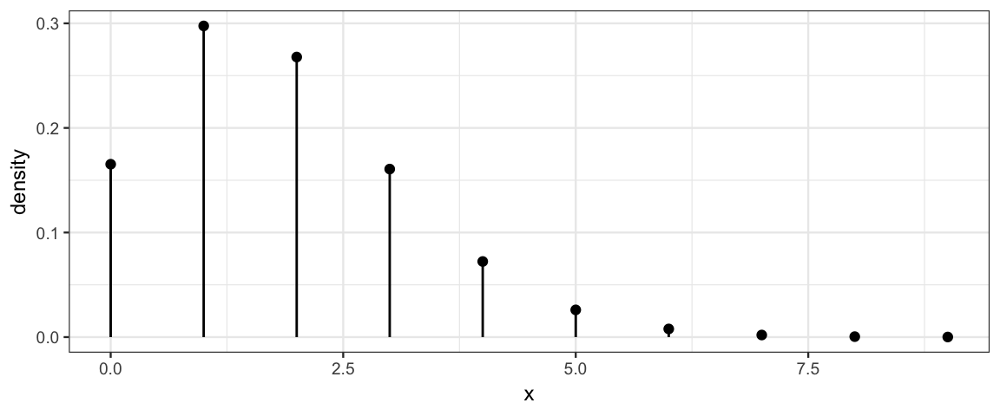
gf_dist("pois", lambda = 5.8)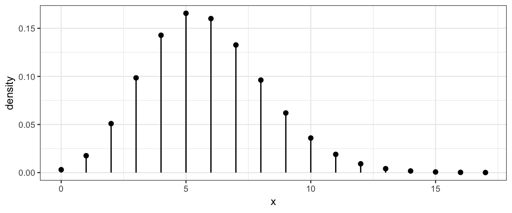
gf_dist("pois", lambda = 25.8)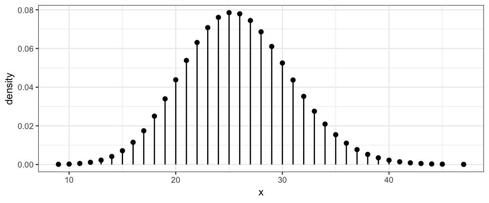
gf_dist("pois", lambda = 254.8)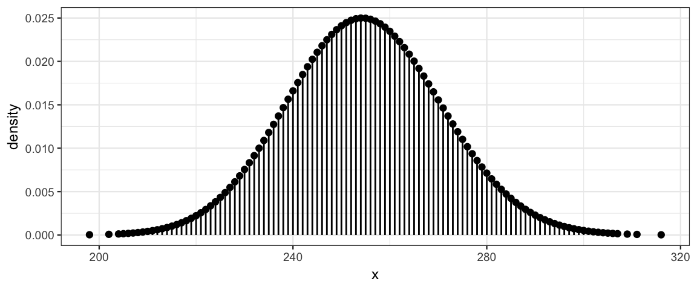
The Poisson distributions become more and more symmetric as \(\lambda\) increases. In fact, they become very nearly a normal distribution.10
24.3 Poisson model
The discussion above gives us enough information to create the appropriate
model in R using brm().
color_brm <-
brm(Count ~ Hair * Eye, data = HairEyeColor, family = poisson(link = log))## Compiling the C++ model## Start samplingcolor_brm ## Family: poisson
## Links: mu = log
## Formula: Count ~ Hair * Eye
## Data: HairEyeColor (Number of observations: 16)
## Samples: 4 chains, each with iter = 2000; warmup = 1000; thin = 1;
## total post-warmup samples = 4000
##
## Population-Level Effects:
## Estimate Est.Error l-95% CI u-95% CI Eff.Sample Rhat
## Intercept 2.95 0.23 2.49 3.37 1178 1.00
## HairBlond 1.58 0.25 1.13 2.07 1257 1.00
## HairBrown 1.47 0.25 1.00 1.99 1215 1.00
## HairRed -0.14 0.33 -0.79 0.50 1459 1.00
## EyeBrown 1.26 0.26 0.78 1.76 1232 1.00
## EyeGreen -1.44 0.51 -2.50 -0.49 1413 1.00
## EyeHazel -0.28 0.34 -0.95 0.41 1328 1.00
## HairBlond:EyeBrown -3.92 0.48 -4.91 -3.03 2073 1.00
## HairBrown:EyeBrown -0.91 0.29 -1.49 -0.37 1296 1.00
## HairRed:EyeBrown -0.84 0.41 -1.62 -0.02 1655 1.00
## HairBlond:EyeGreen -0.36 0.58 -1.46 0.81 1621 1.00
## HairBrown:EyeGreen 0.36 0.55 -0.68 1.49 1488 1.00
## HairRed:EyeGreen 1.23 0.63 0.03 2.50 1601 1.00
## HairBlond:EyeHazel -2.01 0.48 -2.96 -1.08 1894 1.00
## HairBrown:EyeHazel -0.17 0.39 -0.94 0.58 1465 1.00
## HairRed:EyeHazel 0.07 0.49 -0.89 1.04 1628 1.00
##
## Samples were drawn using sampling(NUTS). For each parameter, Eff.Sample
## is a crude measure of effective sample size, and Rhat is the potential
## scale reduction factor on split chains (at convergence, Rhat = 1).Our main question is whether any of the interaction terms are credibly different from 0. That would indicate a cell that has more or fewer observations than we would expect if rows and columns were independent. We can construct contrasts to look at particular ways in which independence might fail.
color2_brm <-
brm(Count ~ Hair + Eye, data = HairEyeColor, family = poisson(link = log))## Compiling the C++ model## recompiling to avoid crashing R session## Start samplingThe model with interaction has higher estimated elpd than the model without interaction terms, an indication that there are credible interaction effects.
loo_compare(waic(color_brm), waic(color2_brm))| elpd_diff | se_diff | elpd_waic | se_elpd_waic | p_waic | se_p_waic | waic | se_waic | |
|---|---|---|---|---|---|---|---|---|
| color_brm | 0.0 | 0.00 | -53.84 | 1.904 | 7.932 | 0.0872 | 107.7 | 3.808 |
| color2_brm | -108.6 | 49.11 | -162.42 | 49.293 | 67.638 | 28.6723 | 324.8 | 98.586 |
(LOO gives a similar result, but requires starting from scratch for several observations, so it is slower.)
As an example, let’s test whether blond-haired people are more likely to have blue eyes than black-haired people. We don’t want to compare counts, however, since the number of blond-haired and black-haired people is not equal. Differences on a log scale are ratios on the natural scale. So we might compare
\[ \begin{align*} \log(\mu_{\mathrm{blond,\ blue}}) - \log(\mu_{\mathrm{blond,\ not\ blue}}) &= \log\left( \frac{\mu_{\mathrm{blond,\ blue}}} {\mu_{\mathrm{blond,\ not\ blue}}}\right) \end{align*} \] with
\[ \begin{align*} \log(\mu_{\mathrm{black,\ blue}}) - \log(\mu_{\mathrm{black,\ not\ blue}}) &= \log\left( \frac{\mu_{\mathrm{black,\ blue}}} {\mu_{\mathrm{black,\ not\ blue}}}\right) \end{align*} \] If those two quantities are equal, then the log odds, hence odds, hence probability of having blue eyes is the same in both groups.
Let’s build the corresponding contrast and find out. Since the intercept coefficient
shows up in every term (and then cancels out), we can drop it from our contrast to
save some typing. Similarly in the blond difference b_HairBlond drops
out and in the black-haired difference b_HairBlack drops out.
Things are further simplified because blue eyes and black hair are the reference
groups (because they come alphabetially first).
Post <- posterior(color_brm)
names(Post)## [1] "b_Intercept" "b_HairBlond" "b_HairBrown" "b_HairRed"
## [5] "b_EyeBrown" "b_EyeGreen" "b_EyeHazel" "b_HairBlond:EyeBrown"
## [9] "b_HairBrown:EyeBrown" "b_HairRed:EyeBrown" "b_HairBlond:EyeGreen" "b_HairBrown:EyeGreen"
## [13] "b_HairRed:EyeGreen" "b_HairBlond:EyeHazel" "b_HairBrown:EyeHazel" "b_HairRed:EyeHazel"
## [17] "lp__"Post <- Post %>%
mutate(
contrast =
0 - (b_EyeBrown + `b_HairBlond:EyeBrown` +
b_EyeGreen + `b_HairBlond:EyeGreen` +
b_EyeHazel + `b_HairBlond:EyeHazel`) / 3 +
- 0 + (b_EyeBrown + b_EyeGreen + b_EyeHazel) / 3
)
hdi(Post, pars = ~ contrast)| par | lo | hi | mode | prob |
|---|---|---|---|---|
| contrast | 1.423 | 2.804 | 2.118 | 0.95 |
plot_post(Post$contrast)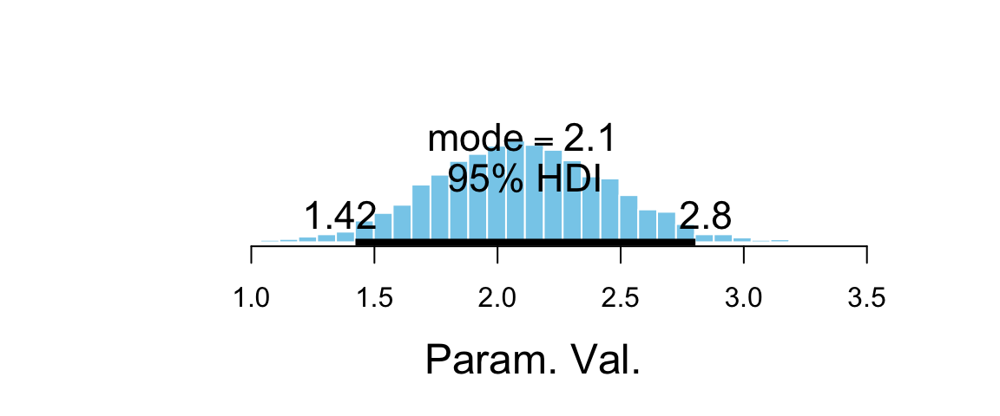
## $posterior
## ESS mean median mode
## var1 1328 2.096 2.09 2.103
##
## $hdi
## prob lo hi
## 1 0.95 1.423 2.804As expected, the posterior distribution for this contrast is shifted well away from 0, an indication that the proportion of blond-haired people with blue eyes is credibly higher than the proportion of black-haired people with blue eyes. The log odds ratio is about 2 (posterior HDI suggests somewhere betweeen 1.4 and 2.7). and the odds ratio can be obtained by exponentiation.
hdi(Post, pars = ~ exp(contrast))| par | lo | hi | mode | prob |
|---|---|---|---|---|
| exp(contrast) | 3.333 | 14.97 | 8.318 | 0.95 |
plot_post(exp(Post$contrast))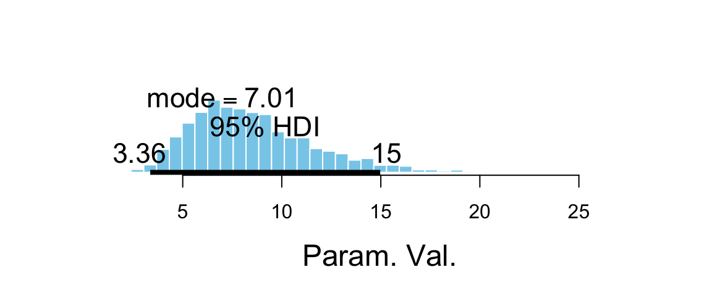
## $posterior
## ESS mean median mode
## var1 1307 8.678 8.085 6.979
##
## $hdi
## prob lo hi
## 1 0.95 3.333 14.97Unfortunately, we can’t convert the odds ratio directly into a relative risk.
\[ \begin{align*} \mathrm{odds\ ratio} &= \frac{p_1 / (1-p_1)}{p_2 / (1-p_2)} \\ &= \frac{p_1}{1-p_1} \cdot \frac{1-p_2}{p_2} \\ &= \frac{p_1}{p_2}\cdot \frac{1-p_2}{1-p_1} \\ &= \mathrm{relative\ risk} \cdot \frac{1-p_2}{1-p_1} \\ \end{align*} \] Relative risk and odds ratio are numerically close when \(\frac{1-p_2}{1-p_1}\) is close to 1, which happens when \(p_1\) and \(p_2\) are both quite small.
24.4 Exercises
A set of data from Snee (1974) reports counts of criminals on two attributes: the type of crime they committed and whether or not they regularly drink alcohol.
gf_tile(Count ~ Crime + Drink, data = CrimeDrink) %>%
gf_text(Drink ~ Crime, label = ~ Count, color = "white", size = 10) %>%
gf_refine(scale_fill_viridis_c(option = "C", begin = 0.1, end = 0.9))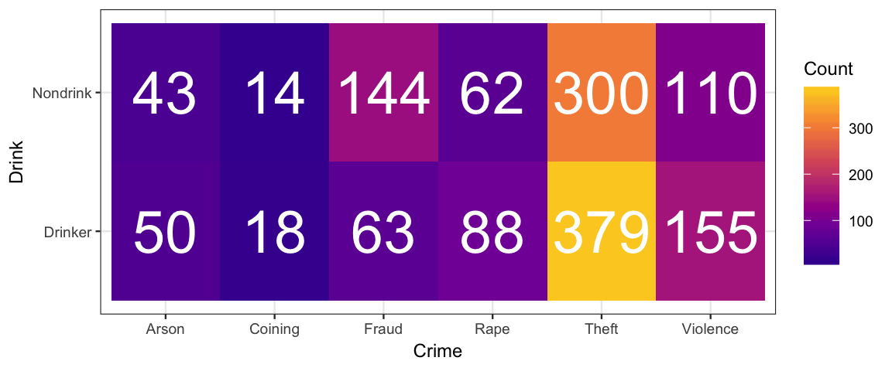
gf_col(Count ~ Crime, fill = ~ Drink, data = CrimeDrink, position = "dodge") %>%
gf_refine(scale_fill_brewer(type = "qual", palette = 3))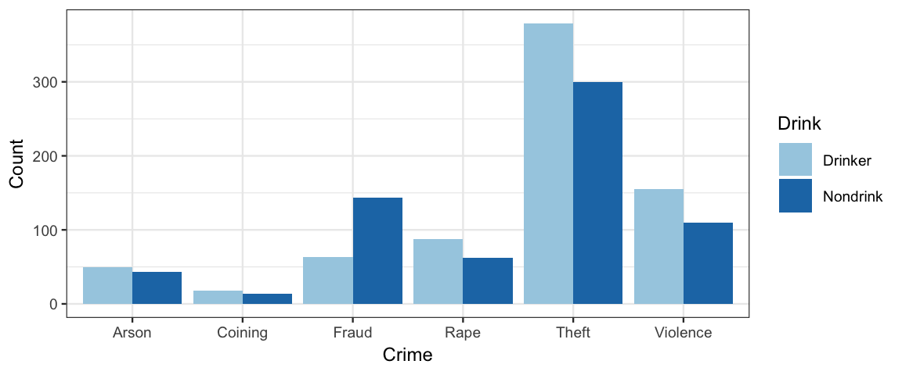
gf_col(Count ~ Drink, fill = ~ Crime, data = CrimeDrink, position = "dodge") %>%
gf_refine(scale_fill_brewer(type = "qual", palette = 3))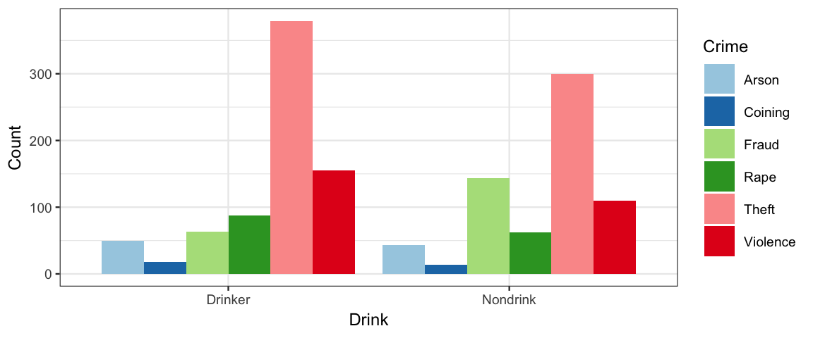
Use this model to answer the questions below.
crime_brm <-
brm(Count ~ Drink * Crime, data = CrimeDrink, family = poisson(link = log))## Compiling the C++ model## Start samplinga. What is the posterior estimate of the proportion of crimes that is
committed by drinkers? Is the precision good enough to say that credibly
more crimes are committed by drinkers than by nondrinkers?
Hint: For a given row of the posterior, how do you compute the expected number
of crimes in each category?
<!-- (This question is asking about a main-effect contrast.) -->
b. What is the posterior estimate of the proportion of crimes that are fraud
and the proportion that are violent (other than rape, which is a separate
category in this data set)? Overall, is the precision good enough to say
that those proportions are credibly different?Take Stat 343 to find out why.↩